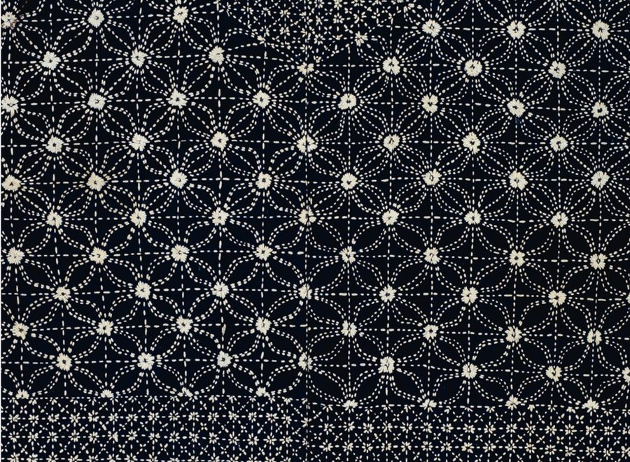
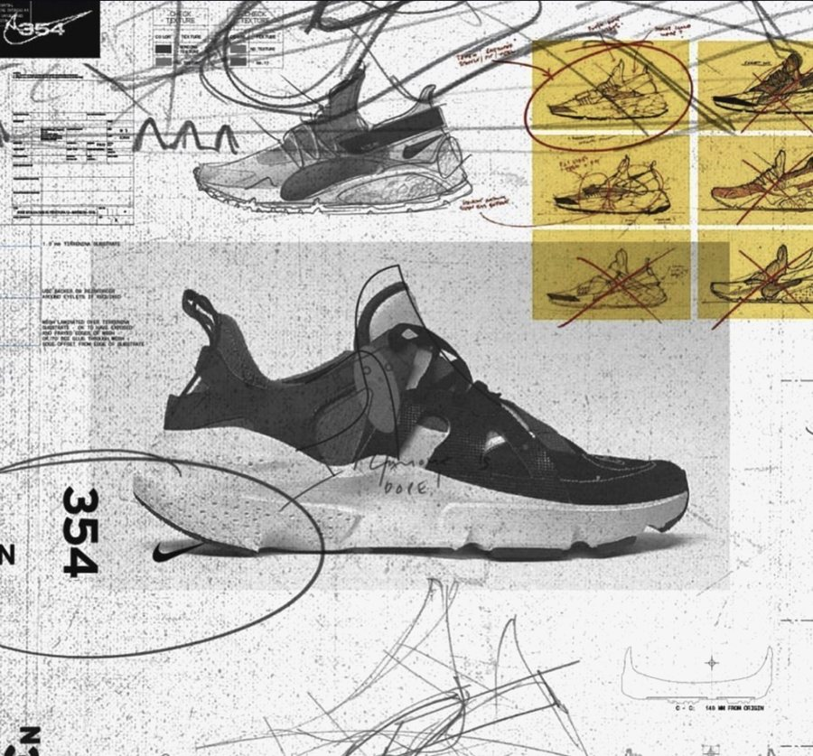

Dematerialization vs rematerialization
Authorship after dematerialization. Lippard traced art's turn away from the object; this theme asks what still has to be true in an object when any appearance can be generated. The author is present wherever care reaches the material, by hand, by another's hand or by machine, and success is measured by the gap between intention and result.



Overall mood
Authorship sits behind the object. This board looks for the traces it leaves: an instruction written before the work, a decision left in view, a name woven into silk or no name at all. Indigo cloth held together by white stitches, a woven portrait that credits its weavers, sketches beside the finished shoe, a room painted by others to a written plan. The look comes second; what matters is who stands behind it. The theme gives no color of its own, so the palette is only what these images carry: deep indigo, paper gray, linen tan, and one bright wall of red and blue.

Definition and test
Regardless of the materiality of the art object, it is what the artist envisions with intention. On intention: the success of an outcome is measured only by the gap between intention and result; if the intention is bad, nothing matters.
- The test
- Is the intention stated before the result? How large is the gap between the two, and who judged it? Where did care reach the material, and can that be seen? In image terms: an image passes if the intention is written, drawn or stood for beside the result, or if it shows who did the making, or that no one is named.
- Limit
- A photograph cannot show intention, and cannot show the gap or who judged it. It can show the trace of an intention: an instruction, a credit, a decision left in view. This board collects traces and does not claim to measure the gap.
- Phygital
- T3 is not against digital method (Theme Framework section 3). The counter-case on the board is a look with nothing behind it, not a screen.
Motifs (what a viewer can recognize)
Each motif comes from a sentence in the research, and is labeled by where that sentence comes from.
| # | Motif | Theory sentence | Images |
|---|---|---|---|
| 01 | Instruction before result: a rule, drawing or card that comes first | "Is the intention stated before the result?"; "an intention line on every specification, written before sampling"; "instruction beside result" | (02) punched cards and drawing hand in the Jacquard portrait; (03) sketches with red marks beside the shoe; (05) a rule worked out on a whiteboard |
| 02 | Delegated execution: the author did not make it by hand | "by my hand, by another's, or by a machine's"; "regardless of the materiality of the art object" | (04) wall drawing made to written instructions and executed by others; (02) woven by a named firm after another's painting; (03) a designed shoe made by a factory |
| 03 | A decision or care left in view | "Where did care reach the material, and can that be seen?"; "care shows if it exists" | (01) white thread that quilts and reinforces indigo cloth, stitch by stitch; (06) a stitched border and figure field |
| 04 | A credit, or none | "credit for who made what"; "a credited hand" | (02) a line woven into the silk naming the executor; (01) maker not recorded. Weak: only (02) states a credit on the object |
Against
It is marked here as a counter-case; the builder cannot mark it on the page, and page 2 says it in the source line. Weak as a counter-case: a fantasy scene, not a fashion look. A generated fashion image or a trend-copy rack was not found as an open image.
No image on this board stands for it; v1's hand-loom photo (the romance was in its caption, not the picture) was dropped. Note that (01) and (06) are hand stitching and must not be read as that opponent: they are on the board for a visible decision and care, not for the hand.
Color direction
T3 gives no color direction of its own. The palette is measured, not chosen.
| HEX | Name | Measured from |
|---|---|---|
#24252C |
Indigo ink | (01) sashiko cloth |
#D4D4D4 |
Paper gray | (03), (05) paper and whiteboard grounds |
#97724A |
Sampler linen | (06) and (05) warm tan |
#BCA55A |
Sketch ochre | (03) yellow sketch cards |
#E32304 |
Wall red | (04) wall drawing |
#2277C7 |
Wall blue | (04) wall drawing |
Method: k-means in CIE Lab on the downsized, ungraded crops (01) to (06) together, giving the grays and tans; the indigo, red, blue and ochre were measured on single images because the gray and tan grounds outweigh them in a combined run (shares: red 20% of (04), indigo 12% of (01), ochre 10% of (03)). The strong red and blue come from one image, (04), and carry no theme meaning: they show what the instruction produced when the executors followed it. Names are descriptive. Nothing is added to the master color book from this.